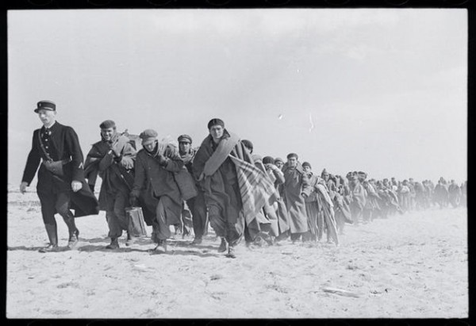
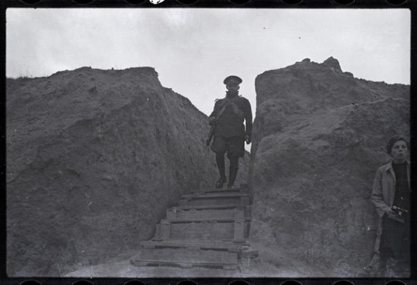

-
Physical History: The Mexican Suitcase at ICP
by Laila Pedro October 15, 2010
The photographic negative is a pregnant subject and a loaded object. It holds an infinite amount of potential— each negative, in its development process, can yield countless, physical entities that will, in turn, go on to live their own stories. The Mexican Suitcase at ICP traces the journey of some very specific negatives along this imagined path, creating an emotionally loaded and symbolically fraught historiography.
The Mexican Suitcase is in large part the story of a series of objects and memories nestled within each other like Russian dolls. According to the ICP, “In late December 2007, three small cardboard boxes arrived at the International Center of Photography from Mexico City after a long and mysterious journey. These tattered boxes—the so-called Mexican Suitcase—contained the legendary Spanish Civil War negatives of Robert Capa. […]Together, these roles of film constitute an inestimable record of photographic innovation and war photography, but also of the great political struggle to determine the course of Spanish history and to turn back the expansion of global fascism.”
This collection of negatives has acquired a mythology of its own even as it relates to such a massive historical thread of the twentieth century. Its particular, peculiar, spottily-detailed journey is compelling and evocative; it is also part of the persistent popularity of narratives around lost artworks (as in the recent discovery of a masterpiece in a sealed Paris apartment or the popular book and documentary The Rape of Europa). Art-inflected mysteries may be so exciting because art is itself mysterious, and The Mexican Suitcase adds both formal and paratextual layers to this fascination. Formally, we are intrigued by the unknown quantity that is the negative image; historically (not that it’s a contest, of course), it’s hard to top the Spanish Civil War for drama, pathos, and horrifying consequences. The Rape of Europa was doubly compelling because it added the massive Nazi art thefts – and the personal histories of those individuals intimately connected to them – to the stories of the works themselves as well as the greater narrative of the War. Here, in recovering images of the Spanish Civil War, these negatives become new fragments of a contested past, and bringing them to light (no pun intended) has all the excitement of unwrapping a hidden piece of history.
The ICP has done an admirable job of presenting these images with equal parts intelligence and sensitivity as the details testify to a great deal of careful thinking. Many of the negatives, for instance, are simply tacked to the wall, unframed. This not only creates a sense of intimacy by removing many of the presentational flourishes and divisive objects (like frames) that are commonly accepted intrusions in the presentation of 2-dimensional artworks, but it quietly makes an eloquent case for the tactile experience of the photographic object, precisely when it has lost much of its ground, probably permanently, to the digital image. For my generation, media coverage of the war in Iraq has defined how we perceive visual war reportage. Much ink has been spilled on the distancing immediacy of experiencing a war on TV—those real-time, night-vision images of the bombing of Baghdad in March 2003 were simultaneously much more “accurate” and much more remote than physical wartime photos. When the twin towers fell, more than one person commented that it looked like the film Independence Day. This is not to say the digital image is not as rich and as full of possibility as the film photo, but to point out how this way of seeing has, in a sense, flattened the emotional topography of our relationship to war reportage.
Here there are at least twenty negatives dedicated to a couple lunching in a plaza—with the woman out of the frame. The minute changes in the man’s facial expressions tell a complex story. Each negative could have yielded a different set of photos with its own physical life and a very different narrative. Very rarely does one take so many shots on the digital camera—the physical experience of clicking away, unaware of what shows up until the film is developed, has nearly ceased to exist, and we feel its loss here. One wonders which image the photographer would have chosen as the “right” one, the singular, defining image, had the photo’s journey not become a Borgesian garden of forking paths.
A further strength of The Mexican Suitcase is its organization according to a loose logic of theme and place. Some sections are called simply ‘Asturias’, ‘Madrid’, and so forth; others are titled ‘Refugees’ or ‘Basques’. These invite us to engage with multiple levels of the conflict, even as they echo the fractious, heterogeneity of Spain (of which the fascists were not particularly fond). Put another way, the curators have acknowledged the diverse, sometimes overlapping layers of identity: regional, spatial, cultural, contextual, historical, temporal. In fact the exhibition is a series of prisms that can be endlessly combined to present a multiplicity of thoughts and impressions. It’s a rare and perceptive kind of generosity that benefits both viewer and subject, while also giving due credit to the possibilities elicited by the work.
The exhibition ultimately presents a series of layered losses: the catastrophic fall of Spain to Franco’s fascist government (which would remain in power until the mid-seventies), the loss of the negatives themselves, and, I think, the loss of our collective intimacy with the photographic image. Downstairs at ICP you can also see Cuba in Revolution, which has little-known images from both before and after 1959. It’s a very different war, in many ways, ad one that ostensibly evokes completely different sensations—but its juxtaposition with The Mexican Suitcase can hardly be coincidental.